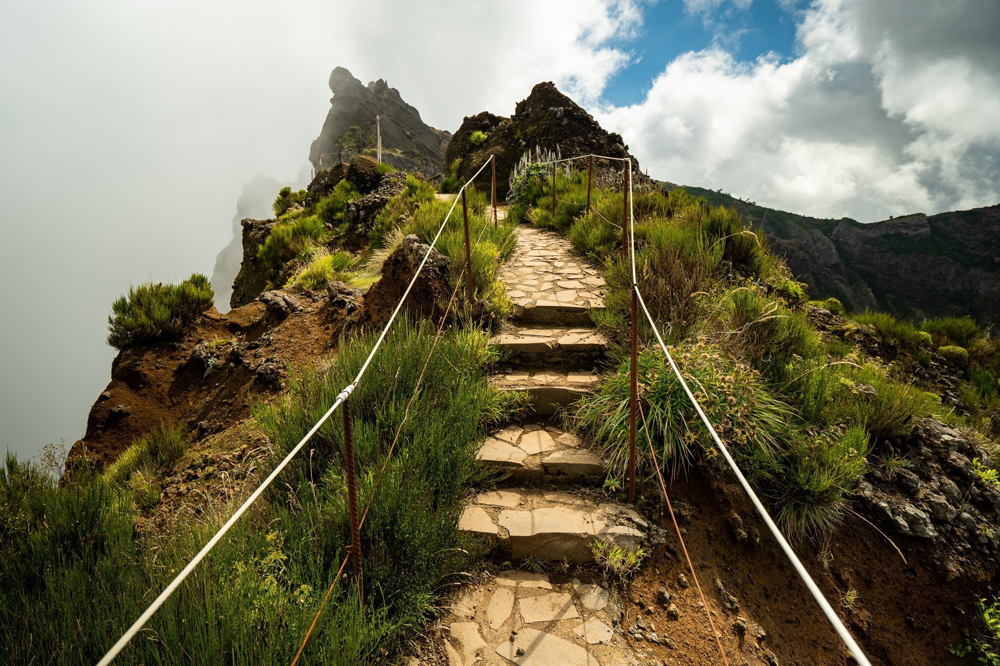
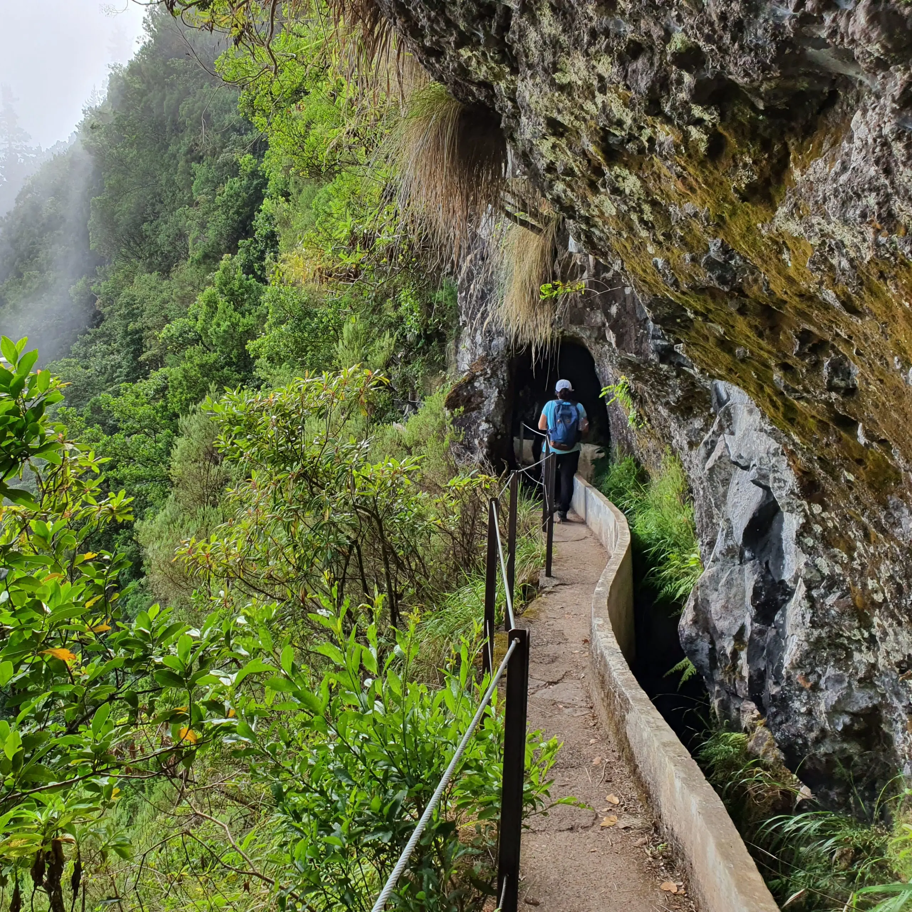

Pico do Arieiro
Its altitude of 1,818 metres make it one of the highest peaks in Madeira, thus providing a breathtaking view. I highly recommend going at sunrise.

Levada das 25 Fontes
The Levada das 25 Fontes is the perfect hike for a sunny day because it mainly in the forest, very beautiful and full of interesting history

Ribeiro Frio
Beautiful but very crowded hike from Ribeiro Frio to Portella Pass. It is 11 kilometers long and easily doable for non hikers.